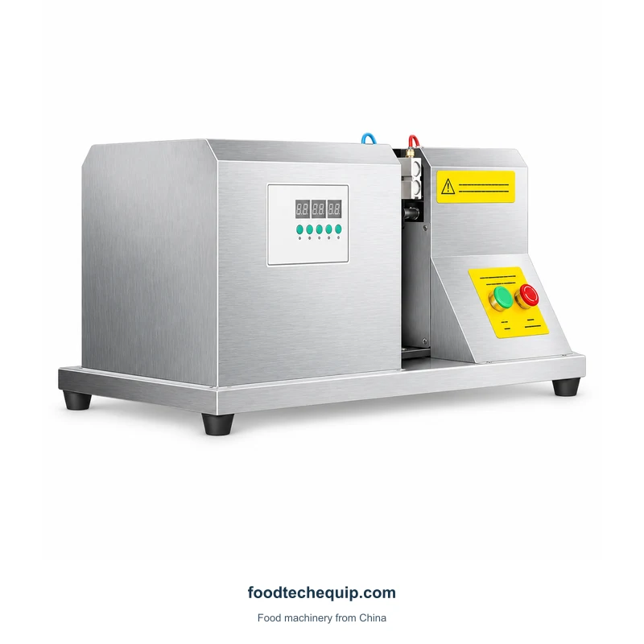
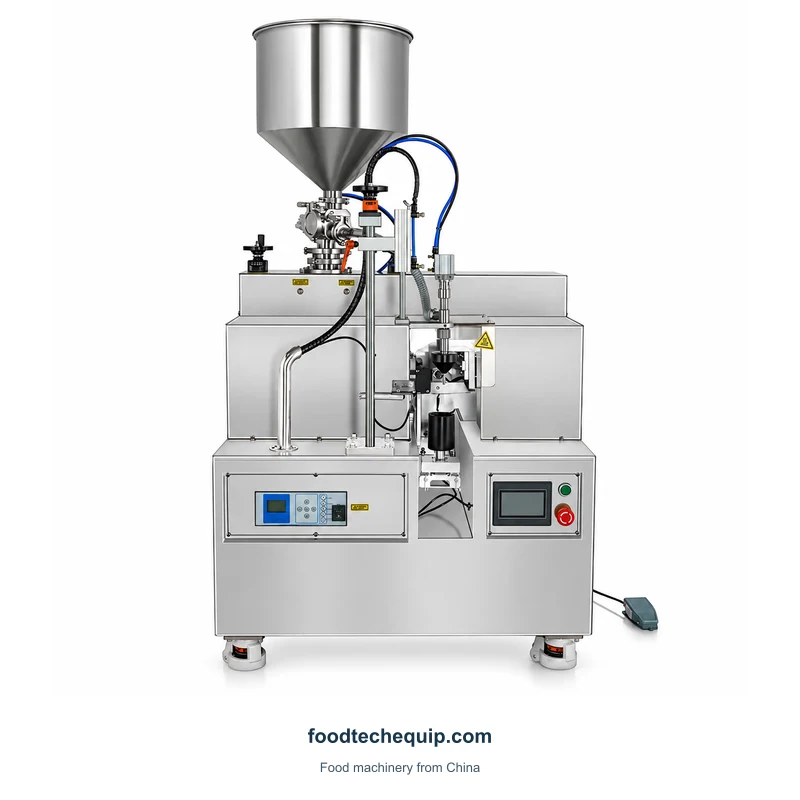
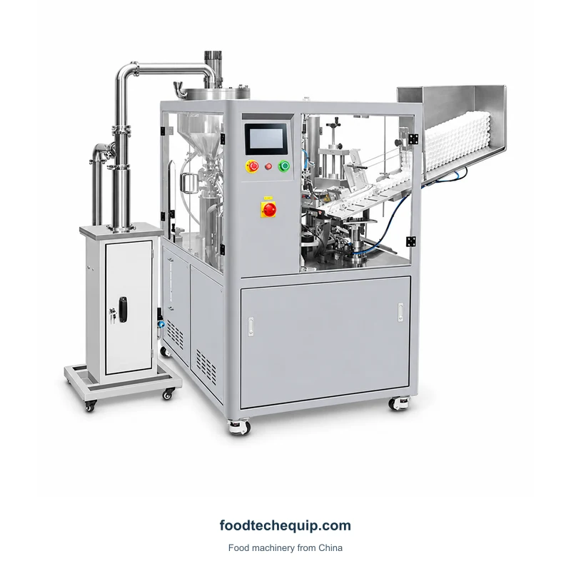

Tube Filling and Sealing
Ultrasonic Tube Sealing Machine
Ultrasonic tube sealing equipment with front controls and a supported work assembly.
View equipmentTube sealing equipment with front controls and a supported working section for positioning the tube end.
Equipment selection · Installation guidance · Remote support
Explore product information ↓Provide tube material, diameter and the open-end condition before discussing closing requirements. Tube positioning and the intended finished seal should be considered together.
Selecting a Bag or Tube Sealing Process ↗| Parameter | Value | Unit |
|---|---|---|
| Sealing material | Plastic | — |
Distinguish an incoming empty tube, a filled open tube and the finished closed tube. If filling is required, describe the product and quantity separately from the joint and tube construction.

Ultrasonic tube sealing equipment with front controls and a supported work assembly.
View equipment
Tube filling and sealing equipment for PE tubes.
View equipment
Tube filling and sealing equipment with an automatic two-head configuration.
View equipment